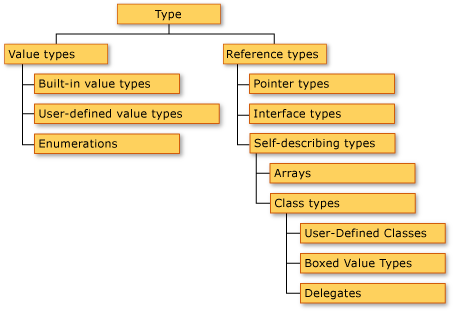

El sistema de tipos de Ogu (1)

Es momento de analizar más detalles del lenguaje de programación Ogu, vamos a partir por su sistema de tipos, este artículo es una introducción al tema.
Ogu es un lenguaje con declaración de tipos estáticos, aunque implementa inferencia de tipos. Veamos algunos ejemplos:
i : Int = 0
j := i // j es de tipo Int
s : String = "un string"
t := s
Ogu tiene “sacarina sintáctica” para soportar tuplas
naipe : (Int,String) = (10, "espadas") // naipe es una tupla
as := (1,"espadas")
Naipe = (Int,String) // Introduce el tipo Naipe como alias de la tupla (Int,String)
Tambien hay sacarina para listas y hashes:
vocales : \[String\] = \["a", "e", "i", "o", "u"\]
ListaDeStrings = \[String\]
mapa : \[String : Int\] = \["Chile":56, "Usa":1\]
Las clases pueden ser genéricas:
Stack{T} : () = {
var \_data : \[T\] = \[\]
push : (x:T) = \_data = x :: \_data
pop : ()-\>(r:T) = {
r = head \_data\
\_data = tail \_data\
}
}
Las tuplas, listas y mapas se implementan en basa tipos genéricos. En realidad al declarar una variable de tipo [T] es lo mismo que declararla como Sequence{T}, y al declararla como [K:V] es lo mismo que Map{K,V}. Tanto Sequence y Map son clases definidas en el runtime básico de Ogu.
Para crear un stack de enteros hacemos lo siguiente
stackOfInt := Stack{Int}()
// otra manera
StackOfInt = Stack{Int} // type alias
stackOfInt := StackOfInt()
Ogu soporta herencia de clases
// un troglodita es un cavernicola que vive en una cueva
Troglodita : (nombre,grito,cueva : String) > Cavernicola(nombre,grito) = {
_cueva := cueva
}
Interfaces
Consideremos un paquete que trabaja con figuras geométricas
Circulo : (radio:Int) = {
area : () -> Int = pi * radio ^ 2
perimetro: () -> Int = 2 * pi * radio
}
Cuadrado : (lado:Int) = {
area : () -> Int = lado * lado
}
Supongamos que queremos crear una funcion que imprima el area de una figura geometrica:
imprimeArea : (c:Cuadrado) = println("el area es "+c.area())
imprimeArea : (c:Circulo) = println("el area es "+c.area())
el problema es que Ogu no nos permite sobrecargar funciones :sad:
Hay tres maneras de solucionar esto, la primera es usando selectores de tipo:
imprimeArea : (c:Cuadrado\|Circulo) = println("el area es "+c.area())
lo que hemos hecho es que el tipo de la función imprimeArea puede ser un Cuadrado o un Circulo (Cuadrado | Circulo ).
Ahora si definimos esta función:
imprimePerimetro : (c : Cuadrado\|Circulo) = println("el perimetro es "+c.perimetro())
tendremos un error de compilación, Cuadrado no define la función perímetro.
La otra forma de solucionar este problema es declarando una interfaz:
Figura := {
area : ()->Int
perimetro : () -> Int
}
Una interfaz es como una clase, pero no tiene constructor y el cuerpo de las funciones es opcional.
De este modo puedo redefinir las clases Circulo y Cuadrado de esta manera:
Circulo : (radio:Int) ~ Figura = {
area = pi * radio ^ 2
perimetro = 2 * pi * radio
}
Cuadrado : (lado:Int) ~ Figura ={
area = lado * lado
perimetro = lado * 4
}
e implementar nuestras funciones así
imprimeArea : (f:Figura) = println("el area es "+f.area())
imprimePerimetro : (f:Figura) = println("el perimetro es"+f.perimetro())
La tercera forma de implementar polimorfismo es mediante herencia y esa queda propuesta al lector.
Consideremos la interfaz Dibujo
Dibujo := {
dibujar : () = println ("dibuja un "+nombre)
nombre : String
}
Podemos ahora extender Circulo y Cuadrado para que sean también dibujos:
Circulo : (radio:Int) \~ Figura & Dibujo = {
area = pi \* radio \^ 2
perimetro = 2 \* pi \* radio
nombre = "circulo"
}
Cuadrado : (lado:Int) \~ Figura & Dibujo ={
area = lado\*lado
perimetro = lado\*4
nombre = "circulo"
}
Este artículo es solo una introducción, y es un complemento a la primera parte de la presentación de Ogu. Espero sus comentarios.